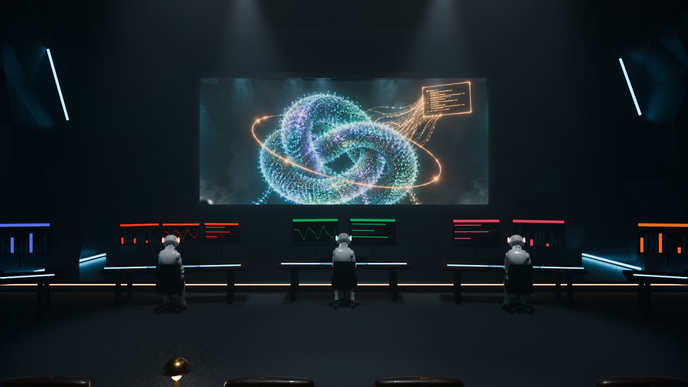
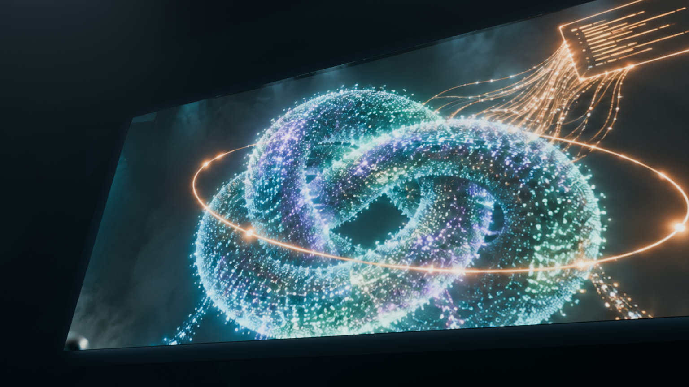
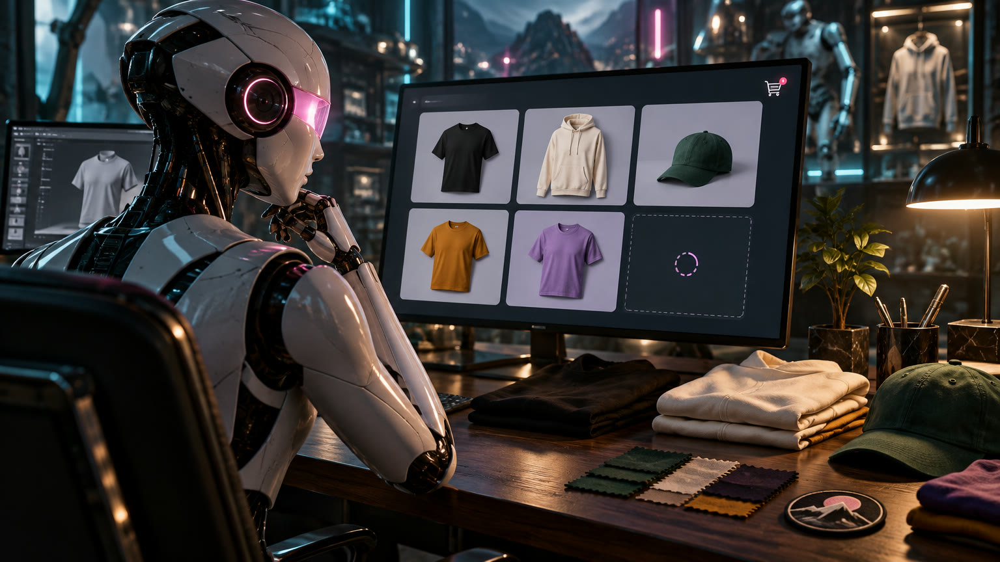
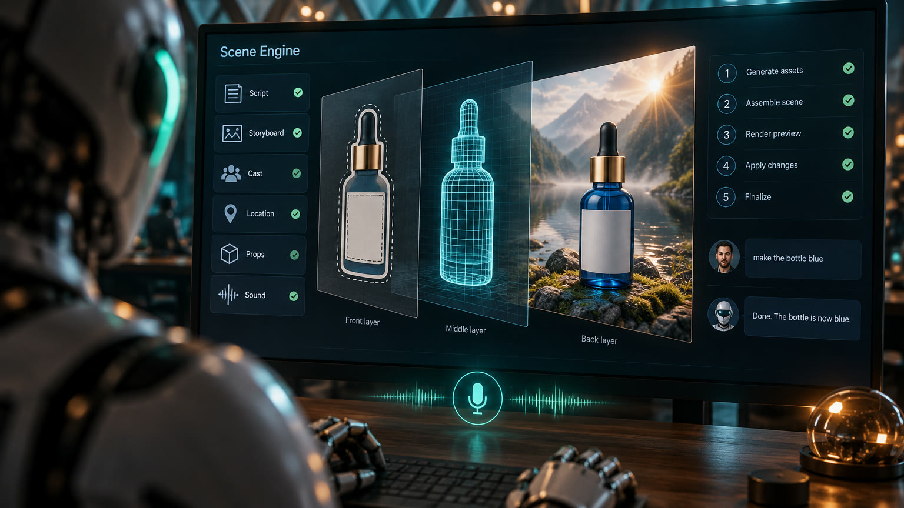

Concept · 3D
Agent Operations Theater
A cinematic room where AI agents work at their desks (Publishing, Video, Manufacturing, Merchandising, Secret keys) and feed the Scene Engine on the big screen.
Motion preview, about 55 seconds: fly-through, each desk, the Scene Engine and speak-to-edit.




On GitHub
Product · opens 30 Oct 2026
HoyOS
The member platform for HOY Wellness in Medellín, polished in the "Pulso Luxe" direction: bento tiles, invitation-style serif, member card.
Product · 2.0 in progress
Between Gigs
The Between Gigs platform, its showcase, and the 2.0 build and backend plans.
On GitHub
No links match that filter.